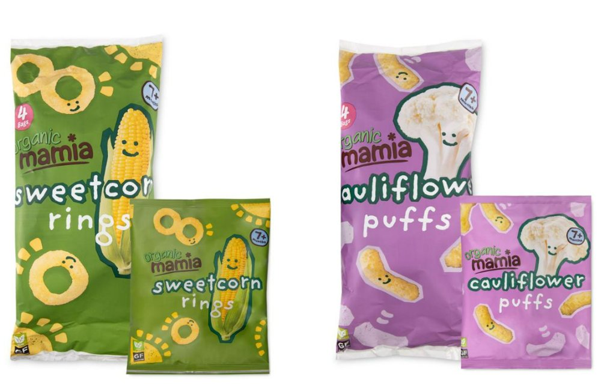
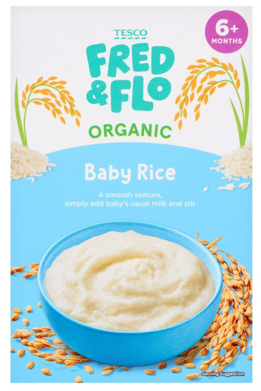

Renovaciones de gama y de packaging, con especial protagonismo de las marcas propias en Reino Unido y el refuerzo del origen en Italia.
Reino Unido: Aldi renueva su gama infantil Mamia
Reino UnidoMamia · AldiRenovación de gama, packaging, reformulaciónAnuncio: 11 sep 2026

Packaging de la gama Mamia Organic: Sweetcorn Rings y Cauliflower Puffs (multipack de 4 bolsas y bolsa individual).
Qué se ve en el envase
Insignia circular con la edad (7+ months) en la parte superior derecha, bien visible.
Sello rosa con el número de bolsas del multipack (4 Bags).
Un color por sabor (verde para sweetcorn, morado para cauliflower) y el ingrediente ilustrado con una cara sonriente.
Sellos en la esquina inferior izquierda, entre ellos «GF» (sin gluten).
Las referencias de la imagen no son las dos de Corn Hearts citadas en el comunicado: sirven como referencia del lenguaje visual de la gama.
Aldi anunció la actualización de su gama Mamia, con implantación progresiva en sus tiendas británicas a partir de septiembre. Los principales cambios:
Nuevo packaging con información más clara sobre la edad recomendada.
Indicaciones de alimentación más comprensibles para los padres.
Actualización de recetas seleccionadas para reducir sal y azúcar cuando corresponda.
Ampliación de la gama de snacks para niños a partir de 12 meses.
Dos referencias nuevas de Corn Hearts: Apple & Raspberry y Banana & Mango, a 0,85 £ por envase de 30 g.
Los nuevos snacks se incorporan al surtido habitual tras una prueba comercial satisfactoria.
Qué significa para Smileat
Mamia usa tres palancas a la vez: claridad nutricional, mejora de producto y precio asequible. Aprovecha el rediseño para reorganizar la información y reforzar la utilidad de la gama. Es una referencia relevante en:
Jerarquía de información en el packaging.
Comunicación por edades y etapas de alimentación.
Ampliación de la gama de snacks.
Capacidad de las marcas propias para competir con marcas especializadas.
Trade Marketing
Comprobar cómo se refleja el nuevo diseño en el lineal y si Aldi ha acompañado la renovación con cartelería o materiales de lanzamiento. El comunicado confirma la implantación en tiendas, pero no acredita una acción específica de PLV.
Fuente: comunicado oficial de Aldi UK (Press Office) sobre Mamia.
Reino Unido: Tesco prepara el relanzamiento de Fred & Flo
Reino UnidoFred & Flo · TescoMarca propia, renovación e innovaciónAnuncio: 20 ago · Tiendas: 12 oct 2026

Tesco Fred & Flo Organic Baby Rice (6+ months).
Qué se ve en el envase
Logotipo Fred & Flo muy grande en la parte superior, con la marca Tesco encima y «Organic» en verde.
Insignia de edad (6+ months) en la esquina superior derecha.
Nombre del producto en grande («Baby Rice») y una línea de modo de uso: textura suave y añadir la leche habitual del bebé.
Fotografía del producto servido en un bol, con la indicación «Serving Suggestion».
Es una referencia de papilla, no uno de los pouches nuevos del anuncio; ilustra el nuevo sistema de identidad y la información de edad y uso en el frontal.
Tesco reorganiza su oferta infantil bajo Fred & Flo, con cambios en identidad, surtido y presentación. En alimentación infantil:
Seis productos para bebés y niños pequeños renovados.
Dos nuevos pouches ecológicos de verduras (guisantes y boniato, 70 g) para introducir sabores desde los seis meses.
Dos nuevos yogures previstos para septiembre.
Información revisada en los envases para orientar durante la alimentación complementaria.
Identidad visual más moderna, con más protagonismo de los personajes Fred y Flo.
Promoción de lanzamiento: cuatro productos por el precio de tres, hasta el 7 de septiembre en tiendas participantes y online.
Por qué importa
Refuerza a las marcas propias como competidoras directas de las especializadas. Tesco no solo compite en precio: agrupa las referencias bajo una identidad común, amplía el surtido y mejora la navegación por etapas.
Revisar cómo se distinguen las referencias de primeras comidas de las de niños mayores.
Evaluar la claridad de los mensajes frontales.
Observar si el diseño crea un bloque de marca más reconocible.
Vigilar el espacio que puede ganar una marca propia frente a Hero, HiPP o Smileat.
Situación temporal
El anuncio es anterior a septiembre, pero la implantación prevista en octubre lo hace relevante. No se ha podido confirmar con fotografías fechadas el aspecto del lineal una vez completado el lanzamiento.
Fuente: comunicado oficial de Tesco (tescoplc.com) sobre Fred & Flo.
Italia: Plasmon impulsa el relanzamiento de sus leches infantiles
ItaliaPlasmonIngredientes, trazabilidad y packaging28–30 sep 2026
Plasmon comunicó un nuevo impulso a su negocio de alimentación infantil, con foco en leches infantiles y de crecimiento. La estrategia incluye:
Reforzar la procedencia italiana de la leche.
Dar más visibilidad a la trazabilidad de la cadena de suministro.
Poner en valor el protocolo de calidad «Oasi nella Crescita».
Evolucionar recetas y formatos.
Renovar la identidad visual para que los atributos de la gama sean más reconocibles en el lineal.
La marca destaca también sus capacidades industriales en Italia y la experiencia de su grupo propietario en el sector lácteo.
Lectura competitiva
Plasmon convierte la procedencia y el control de la cadena en elementos visibles de diferenciación: tradición italiana, confianza y desarrollo de producto. Para Smileat, la trazabilidad no tiene por qué quedarse en una web o en un sello pequeño: puede formar parte de la jerarquía visual de una gama.
Qué investigar en tienda
Si el nuevo packaging se ha implantado en todo el surtido.
Si las leches de crecimiento ocupan un bloque específico.
Si hay comunicación secundaria sobre el origen de la leche.
Si la renovación se acompaña de cabeceras, stoppers o cartelería.
Fuente: Foodweb — inversión de Plasmon y relanzamiento de las leches infantiles.